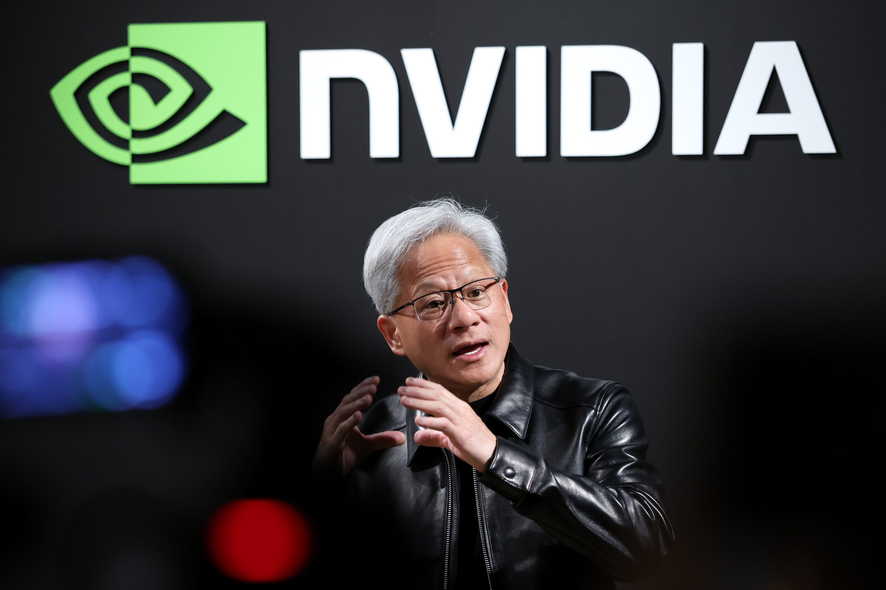
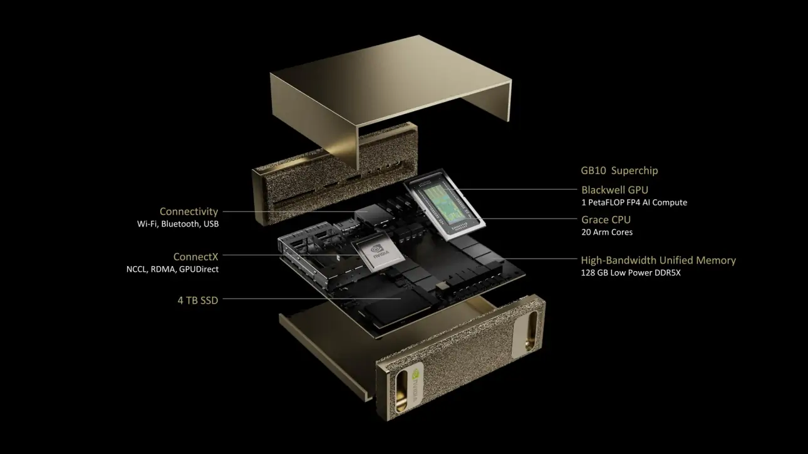
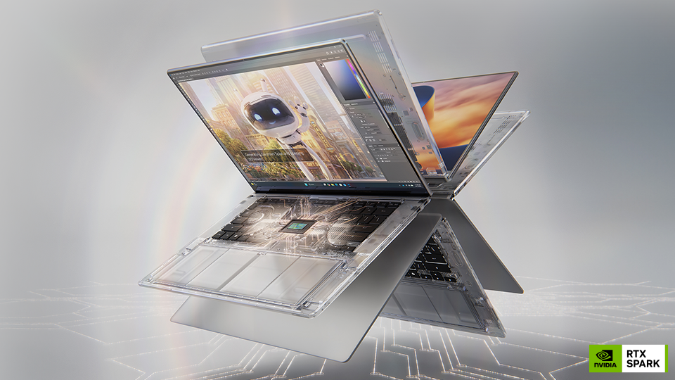
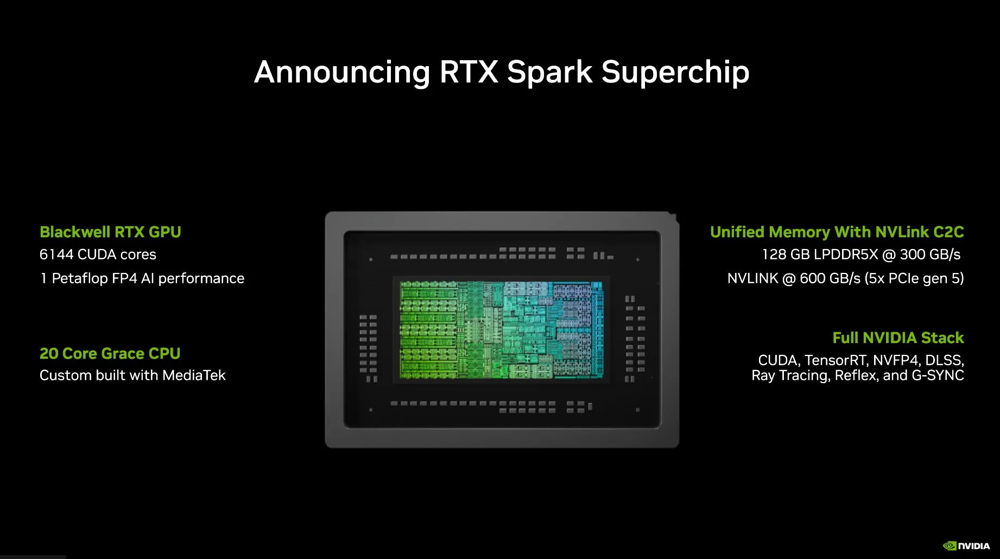

RTX graphics
Dedicated GPU hardware for graphics rendering and supported AI workloads.
HARDWARE NOTES / NVIDIA
Exploring NVIDIA's compact AI systems, RTX laptop graphics and the silicon powering modern computing.
Explore hardware ↓
01 / PERSONAL AI COMPUTING

DGX Spark brings NVIDIA's Grace Blackwell architecture into a compact desktop system. It combines a 20-core Arm CPU, Blackwell GPU architecture and 128 GB of unified system memory for local AI development.
02 / MOBILE GRAPHICS

RTX laptops combine a mobile GPU with a CPU, memory and a compact cooling system. Depending on the model, they can accelerate games, 3D rendering, video editing and AI applications.
Dedicated GPU hardware for graphics rendering and supported AI workloads.
AI-assisted graphics techniques that can improve image quality and performance in supported games.
Technologies designed to balance laptop performance, efficiency, cooling and battery life.
03 / GPU ARCHITECTURE

GPU architecture determines how graphics and parallel workloads are processed. NVIDIA GPUs use CUDA cores for general parallel processing, Tensor Cores for supported AI operations and RT Cores for ray tracing.
INTERACTIVE HARDWARE NOTES
Specialized hardware accelerates supported AI and matrix operations.
04 / FURTHER READING
NVIDIA DGX Spark — product and specifications ↗
NVIDIA GeForce RTX 50-series laptops ↗